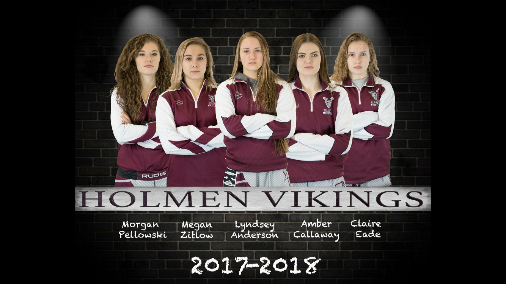
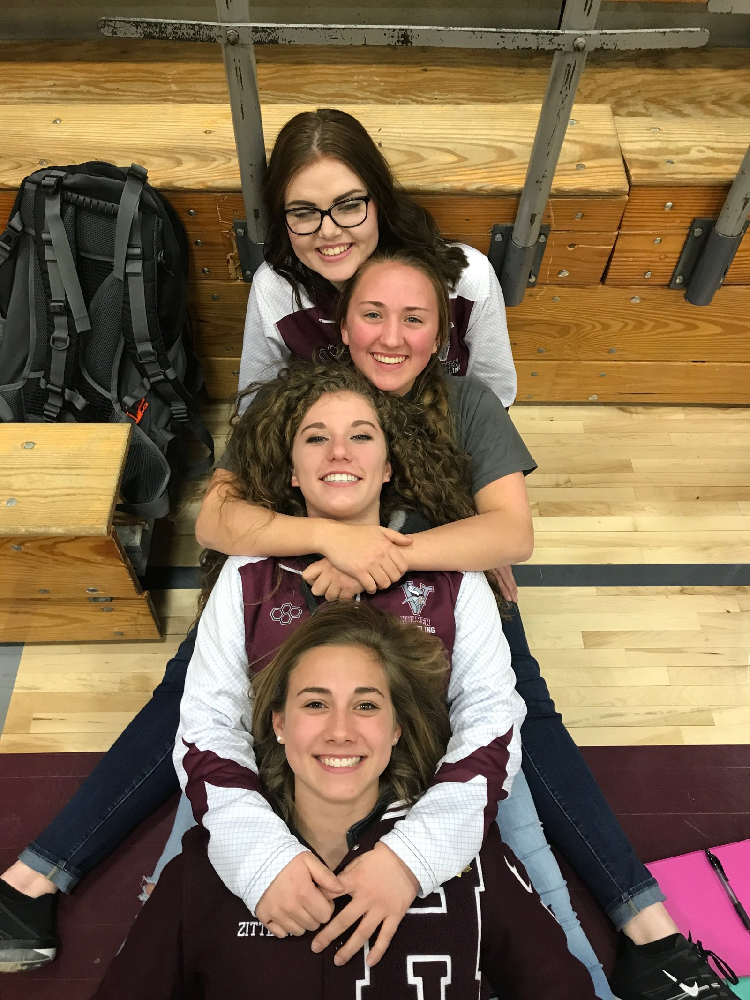
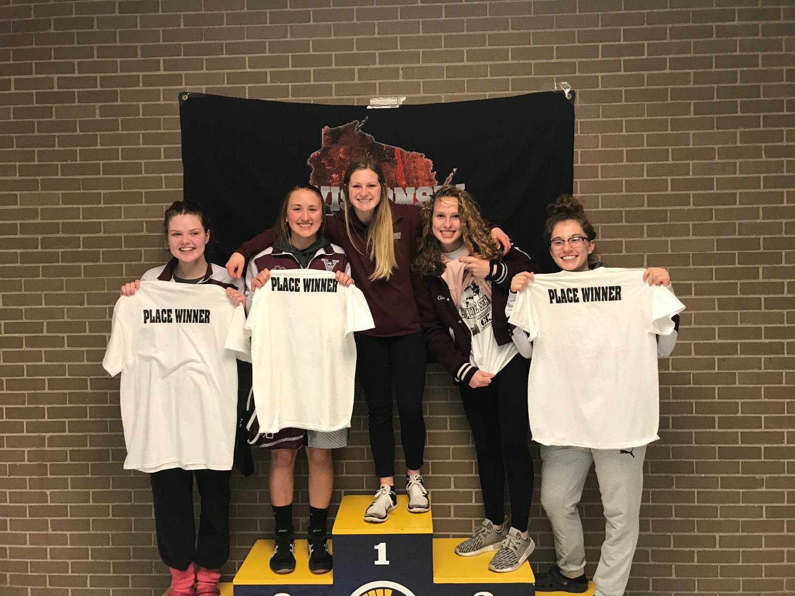

While a few girls wrestled for Holmen over the years — including current assistant coach Kelsie Speltz (2010–2014) — the official launch of Holmen Women’s Wrestling began in 2017. Then–head coach Jason Lulloff recognized the potential of the sport and began actively recruiting girls to join the team. He brought on Coach Kelsie to help grow the program, and Teague Fenwick was also one of the girls-only coaches for the first three seasons. That first season (2017–18) saw five girls participate — a number that quadrupled to twenty the following year!
Jason still supports the team as the high school Activities Director, and Coach Kelsie remains an integral part of our program as Head Assistant Coach.
In 2022, Coach Carl DeLuca became the first officially hired Women's Head Wrestling Coach in the state, helping continue and expand our success.
Year One
Our first year of Holmen Women’s Wrestling began with Jason Lulloff as Head Coach, and Kelsie Speltz and Teague Fenwick assisting with the girls team.
The 2017 Badger State Girls Invitational was Holmen’s first girls tournament. It had 26 teams and 37 girls. Morgan Pellowski’s bracket was just wrestling the same girl twice. Amber Callaway had six girls in her bracket.
In comparison, the 2025 Badger State Girls Invitational had 48 teams and 243 wrestlers!



WIAA Sanctions Girls Wrestling and Holds a State Tournament
The first WIAA Girls State Tournament was held in La Crosse, where we had two placewinners: Evelyn Vetsch finished 4th at 152 pounds, and Emily Szak placed 6th at 165 pounds.
First Wisconsin Girls Coaches
The School District of Holmen made history by hiring Coach Carl as Head Coach and Kelsie Speltz as Assistant Coach, creating the first-ever district-funded girls wrestling staff in Wisconsin.
Our First Dual Meet
We faced Decorah, IA in the first dual meet in our program’s history, with a final score of Holmen 30 – Decorah 54.
First Home Dual and First Dual Win
We earned our first-ever dual win — and did it in front of our home crowd — by taking down Eau Claire North 45–18.
Bi-State Classic Champions
In the inaugural year of the Bi-State Girls Team Championship, we brought home the title, scoring 40 more points than second-place South St. Paul, MN.
Girls Head Coach of the Year
Following the 2023–24 season, Coach Carl was honored as the inaugural Wisconsin Girls Coach of the Year.
Regional and Sectional Team Champions
In the first year the WIAA recognized Girls Team Regional and Sectional champions, we claimed both titles.
Girls Assistant Coaches of the Year
Following the 2024–25 season, our assistant coaching staff — Kelsie Speltz, Emily Anderson, Joey Perrigo, and Brooklyn Lull — was named the Wisconsin Girls Assistant Coaching Staff of the Year.
First 100-Win Wrestler
Kaytlynn Lambries became Holmen Women's Wrestling's first wrestler to reach 100 career wins.
{kind=link}
First State Finalist
Aini Anderson became Holmen Women's Wrestling's first-ever state finalist.